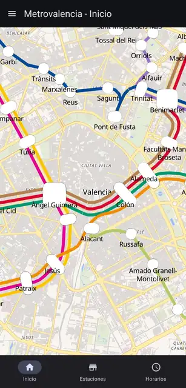
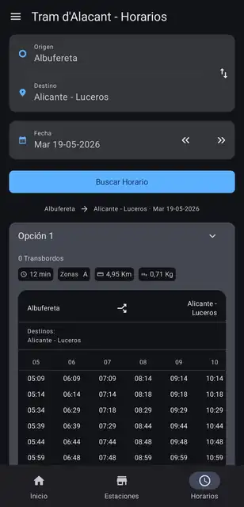

Valencia Transit Reloaded
خرائط وسفر
Public Transit information for the metropolitan areas of Valencia and Alicante, using the same APIs and data as the official APPs. Right now, only Metrovalencia and TRAM d'Alacant are supported, more systems coming in the future! · Search Stops. · Save your favorite stations. · See stop real time in
✓ ترخيص مفتوح (GPL-3.0-only) · آخر تحديث: 2026-05-31
0.1.1الإصدار
17.7 MBالحجم
GPL-3.0-onlyالرخصة
Open in Kanzتحميل APK (17.7 MB)
Download APK
SHA-256: 6b9c023da28c1575ddb421d1e8aa7cfbd4bc3041173b3920b82a9841ed757849


امسح الكود لفتح صفحة التطبيق
Scan to open this app page
لو كنز مش متثبت عندك: نزّل متجر كنز.
Not installed? Get the Kanz store.